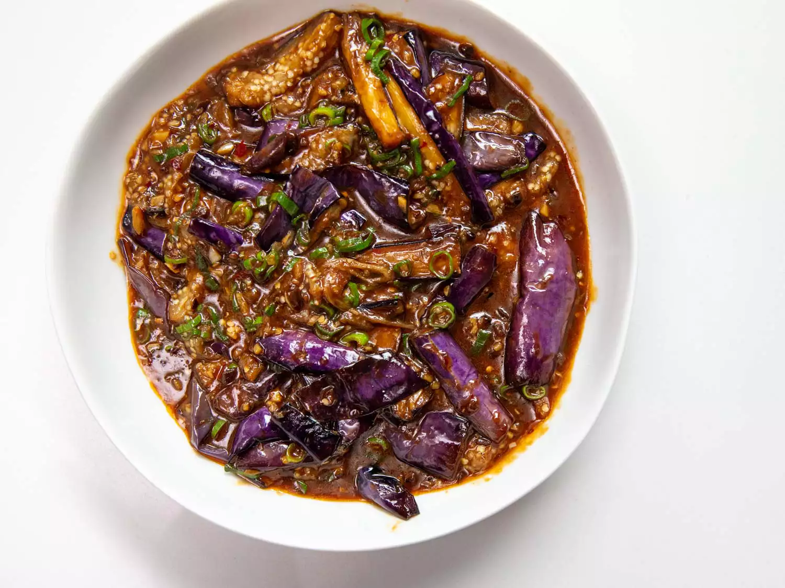

Sichuan Eggplant

Food Description
Don't let the name fool you—there's no fish here. Instead, this Sichuanese eggplant
classic is deeply flavored with garlic, ginger, and pickled chiles, aromatics that
are often associated with fish cookery.
Ingredients
- 1 pound 5 ounces (600g) eggplants (1–2 large)
- Salt
- Cooking oil, for deep-frying
- 1 1/2 tablespoons Sichuan chile bean paste
- 1 1/2 tablespoons finely chopped garlic
- 1 tablespoon finely chopped ginger
- 10 tablespoons (150ml) hot stock or water
- 4 teaspoons superfine sugar
- 1 teaspoon Chinese light soy sauce
- 3/4 teaspoon potato starch, mixed with 1 tablespoon cold water
- 1 tablespoon Chinkiang vinegar
- 6 tablespoons thinly sliced scallion greens
Steps
- Cut the eggplants into batons about 3/4 inch (2cm) thick and 2 3/4 inches (7cm) long. Sprinkle with salt, mix well and set aside for at least 30 minutes.
- Rinse the eggplant, drain well and pat dry with paper towels. Heat the deep-frying oil to around 390°F (200°C) (hot enough to sizzle vigorously around a test piece of eggplant). Add the eggplant, in two or three batches, and deep-fry for about 3 minutes, until tender and a little golden. Drain well on paper towels and set aside.
- Carefully pour off all but 3 tablespoons oil from the wok and return to medium heat. Add the chile bean paste and stir-fry until the oil is red and fragrant: take care not to burn the paste (move the wok away from the burner if you think it might be overheating). Add the garlic and ginger and stir-fry until they smell delicious.
- Tip in the stock or water, sugar and soy sauce. Bring to a boil, then add the eggplant, nudging the batons gently into the sauce so they do not break apart. Simmer for a minute or so to allow the eggplant to absorb the flavors.
- Give the potato starch mixture a stir and add it gradually, in about three stages, adding just enough to thicken the sauce to a luxurious gravy (you probably won’t need it all). Tip in the vinegar and all but 1 tablespoon of the scallion greens, then stir for a few seconds to fuse the flavors.
- Turn out onto a serving dish, scatter over the remaining scallion greens and serve.